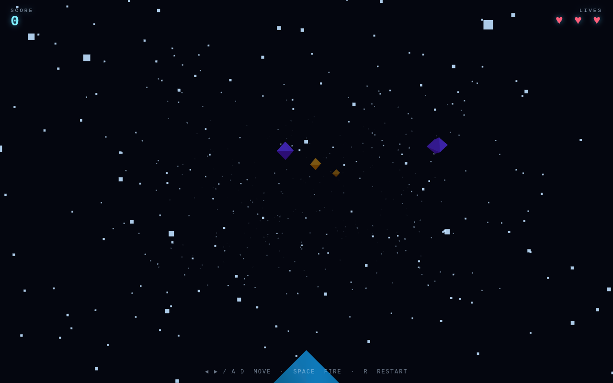

qwen3-8-27b-q4km PASS
- player ship never appears on screen (mesh projects to y=1052..1827px in a 800px viewport, below the camera frustum) — it still moves, shoots and collides
- some 3D geometry is painted under the HTML HUD/hint overlay
Browser game cell: the same frozen prompt (WEBGAME_PROMPT.md,
sha256 b57d8257ad6e79b5…) asks each model for a complete single-file
three.js arcade shooter. Each game is opened in headless Google Chrome over both
file:// and http://; every number below comes from that probe
(metrics.json) or the generation log (gen.json).

| game | all | console errors | canvas | webgl | animation | input | http | file | lines | tokens | t/s | ship | |
|---|---|---|---|---|---|---|---|---|---|---|---|---|---|
| qwen3-8-27b-q4km | PASS | 0 | PASS | PASS | PASS | PASS | PASS | PASS | 234 | 3062 | 58.22 | metrics.json | |
| qwen3-8-27b-q4km-b | PASS | 0 | PASS | PASS | PASS | PASS | PASS | PASS | 252 | 3288 | 55.37 | metrics.json |
animation = two screenshots ~1 s apart differ. input = ArrowRight then ArrowLeft each change the frame (pixel-hash compare). Controls: ←/→ or A/D to move, SPACE to fire, R to restart. Games load three.js from a pinned CDN, so they need network access the first time.